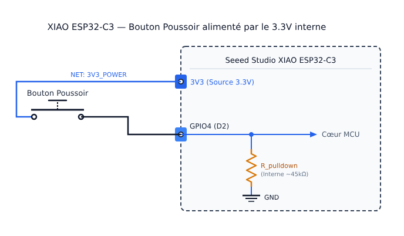
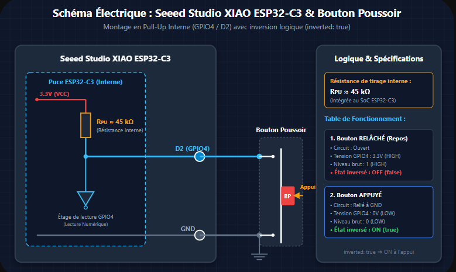

139. Lire un bouton : actions et rebond mécanique¶
139.1 Lire un bouton avec une entrée GPIO¶
Une broche GPIO peut être configurée comme entrée ou comme sortie. Pour lire un signal numérique, ESPHome utilise un binary_sensor avec platform: gpio. L'entrée détecte deux niveaux logiques, généralement interprétés comme activé et désactivé; elle ne mesure pas une tension variable.
Note
Pour une tension variable, on utilise plutôt un capteur analogique ADC (platform: adc)
Dans la configuration, le numéro GPIO désigne la broche du microcontrôleur, qui peut avoir un autre nom imprimé sur la carte.
Le mode d'entrée et une résistance de rappel (pullup ou pulldown) donnent un état stable lorsque le circuit externe n'impose pas de niveau. Si ni résistance de rappel interne ni résistance externe n'est configurée, la broche est flottante : elle n'a pas de niveau défini et peut changer d'état sans appui sur le bouton. Dans les exemples ci-dessous, pulldown ou pullup fixe ce niveau au repos.
Warning
Vérifier le brochage de la carte et les limites électriques avant de connecter un circuit; les entrées du XIAO ESP32-C3 ne tolèrent pas 5 V.
Exemple simple : bouton avec résistance pulldown¶
La résistance de rappel interne maintient l'entrée à l'état bas lorsque le bouton est relâché. Le bouton relie GPIO4 à 3,3 V lorsqu'on appuie : l'état lu passe alors à haut.

binary_sensor:
- platform: gpio
pin:
number: GPIO4
mode:
input: true
pulldown: true
name: "Bouton"
id: bouton
À l'appui, le capteur binaire passe directement à l'état activé.
Variante : bouton avec pullup et inversion¶
Avec un câblage pullup, l'entrée est normalement à l'état haut et le bouton la relie à GND lorsqu'on appuie. Le niveau électrique lu à l'appui est donc bas. L'option inverted: true inverse cette correspondance pour que l'état logique publié par le capteur binaire soit activé pendant l'appui.

Avec la résistance de rappel (pullup), l'entrée est normalement à l'état haut. L'appui la relie à GND; inverted: true fait correspondre cet état bas à l'état logique « activé » du capteur binaire.
binary_sensor:
- platform: gpio
pin:
number: GPIO4
mode:
input: true
pullup: true
inverted: true
name: "Bouton"
id: bouton
Vérifier le numéro GPIO dans le brochage de la carte utilisée.
Rebond mécanique et filtre¶
Les contacts physiques d'un bouton ne changent pas toujours d'état proprement. Pendant quelques millisecondes, ils peuvent établir et interrompre plusieurs fois le contact : c'est le rebond mécanique. Sans filtrage, ces transitions rapides peuvent être interprétées comme plusieurs appuis.
ESPHome ne supprime pas automatiquement ce rebond pour une entrée GPIO. Pour ignorer les transitions qui ne restent pas stables pendant 20 ms, ajouter ces filtres dans la déclaration du binary_sensor :
Les filtres attendent que chaque nouvel état reste stable pendant la durée indiquée avant de le publier. 20 ms est un point de départ; cette durée peut être ajustée selon le bouton et le montage.
Troisième exemple : ajout des filtres anti-rebond¶
Le troisième exemple reprend le montage pullup avec inversion logique et ajoute seulement les filtres anti-rebond. (le montage physique reste le même que dans la section précédente)
binary_sensor:
- platform: gpio
pin:
number: GPIO4
mode:
input: true
pullup: true
inverted: true
name: "Bouton"
id: bouton
filters:
- delayed_on: 20ms
- delayed_off: 20ms
Introduction aux actions dans ESPHome¶
Une action est une instruction exécutée par l'appareil lorsqu'un événement survient. Dans un binary_sensor, on_press et on_release sont des déclencheurs : ils lancent les instructions placées sous then. Ces instructions peuvent commander un interrupteur, allumer une lumière ou écrire un message dans les journaux. Plusieurs actions sous then s'exécutent dans l'ordre.
Les actions de cette configuration sont exécutées par l'ESP32-C3. Elles peuvent donc commander les composants reliés à la carte même si Home Assistant est déconnecté. Home Assistant sert à consulter l'état du capteur et à envoyer ses propres commandes lorsqu'il est disponible.
Déclencheurs selon le type de capteur¶
Le déclencheur dépend de la plateforme et du type de valeur publiée :
- Un
binary_sensorpropose notammenton_presseton_releasepour ses changements d'état;on_statese déclenche à chaque changement. - Un capteur numérique (
sensor) proposeon_valueà la réception d'une nouvelle mesure eton_value_rangelorsqu'elle franchit les limites définies. - Un capteur textuel (
text_sensor) proposeon_valuelorsqu'il publie une nouvelle valeur textuelle.
Par exemple, ce déclencheur allume la DEL lorsque la mesure ADC dépasse 2 V. Il doit être placé dans la configuration du capteur concerné :
sensor:
- platform: adc
pin: GPIO3
name: "Mesure analogique"
on_value_range:
- above: 2.0
then:
- switch.turn_on: led_montage
La valeur et l'unité dépendent du capteur utilisé. Pour un sensor ADC ESPHome, la mesure est exprimée en volts.
Quatrième exemple : configuration complète avec actions¶
On ajoute maintenant les actions à la configuration filtrée. L'exemple suppose que l'interrupteur led_montage a déjà été déclaré dans la configuration de la DEL.
binary_sensor:
- platform: gpio
pin:
number: GPIO4
mode:
input: true
pullup: true
inverted: true
name: "Bouton"
id: bouton
filters:
- delayed_on: 20ms
- delayed_off: 20ms
on_press:
then:
- switch.turn_on: led_montage
- logger.log: "Bouton appuyé : DEL allumée"
on_release:
then:
- switch.turn_off: led_montage
- logger.log: "Bouton relâché : DEL éteinte"
État du bouton dans Home Assistant¶
Le capteur binaire publie l'état du bouton dans Home Assistant lorsque l'intégration est joignable. On peut ainsi vérifier l'entrée dans le tableau de bord en plus des actions exécutées localement par ESPHome.